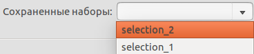

Сохранеие наборов
Набор представляет из себя список объектов, которые должны быть выбраны и отмечены флажком.

Сохранение набора:
- - Отметить объекты, которые должны быть сохранены в набор
- - Ввести имя набора в выпадающий список
- - Нажать кнопку сохранить набор выбранных элементов
- - В выпадающем списке Сохраненные наборы появиться элемент с именем сохраненного списка
Удаление набора:
- - В выпадающем списке Сохраненные наборы выбрать набор который необходимо удалить
- - Нажать кнопку удалить набор выбранных элементов
Копирование набора в буфер обмена:
- - В выпадающем списке Сохраненные наборы выбрать набор который необходимо сохранить в буфер
или в ручную выбрать необходимые элементы
- - Нажать кнопку копировать набор выбранных элементов в буфер обмена.
Список объектов скопируется в буфер обмена в виде регулярного выражений. Эту строку можно вставить в
поле поиска и в панели сравнения отобразяться только объекты, содержащиеся в списке.